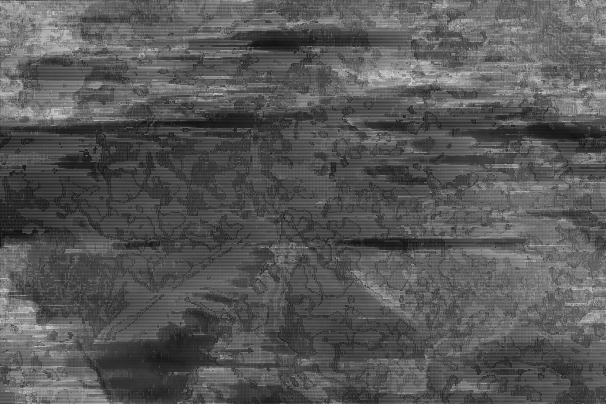
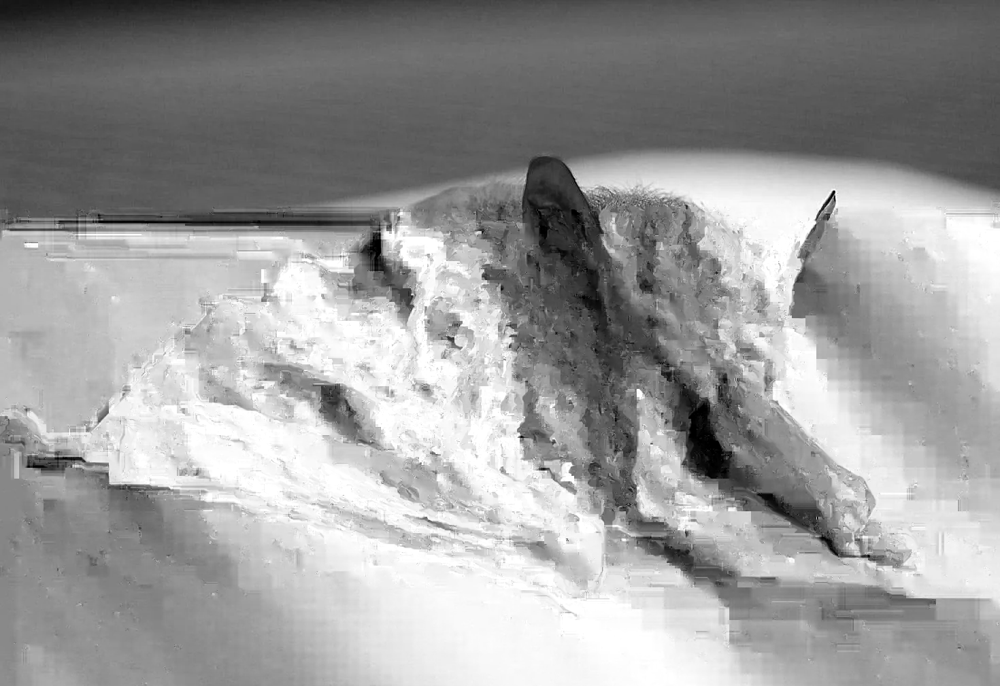

Glitch Art
02/14/2026



All of these images began as photographs of bats, which I then exported into different programs to glitch. I chose bats because when I processed the files in Audacity, converting the images into audio through a data moshing technique, the resulting sound resembled echolocation recordings. Because of this connection, the two images above were created through audio moshing, where image data is translated into sound. The glitches transform the visuals into noise, echoing the way bats rely on sound to navigate their environment. The image below was created using a data-bending process, in which the file was converted into text and manually altered to produce visual distortions.

After creating the three glitch images, I combined them into the final photomontage above. Elements from the bottom image form the main creature, the image to the right adds a distorted overlay, and the image to the left helps build the background. This piece explores how technology can distort and stress the natural world, reshaping it in ways that often go unnoticed. While digital systems may feel intangible, they have real environmental impacts. For example, data centers consume massive amounts of water and energy, placing strain on natural resources.